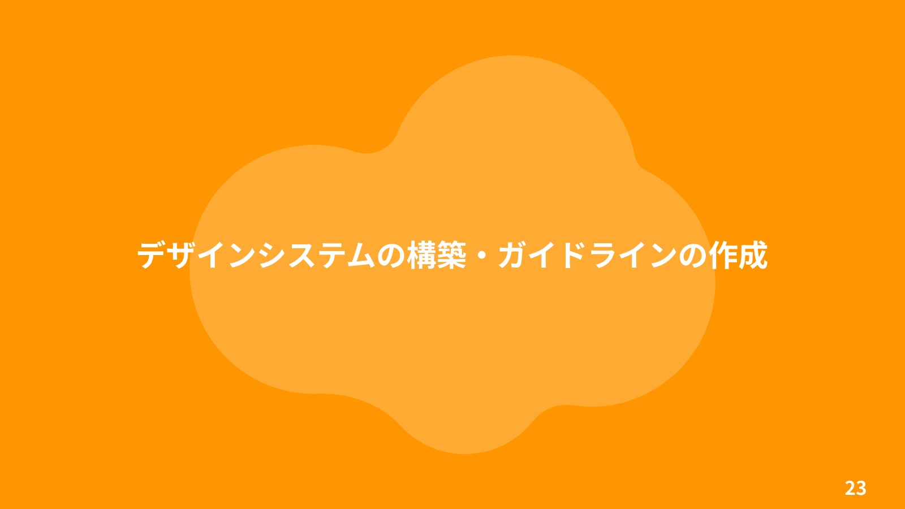
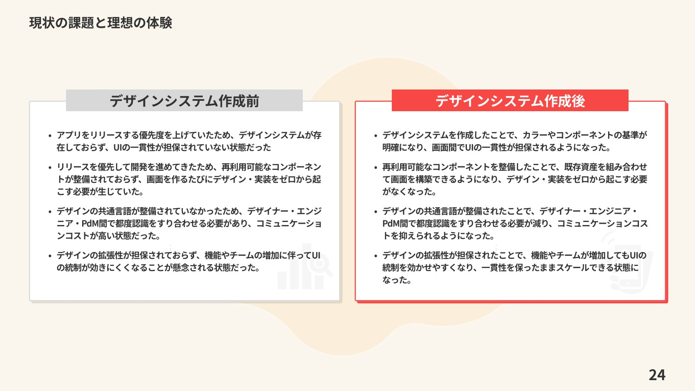
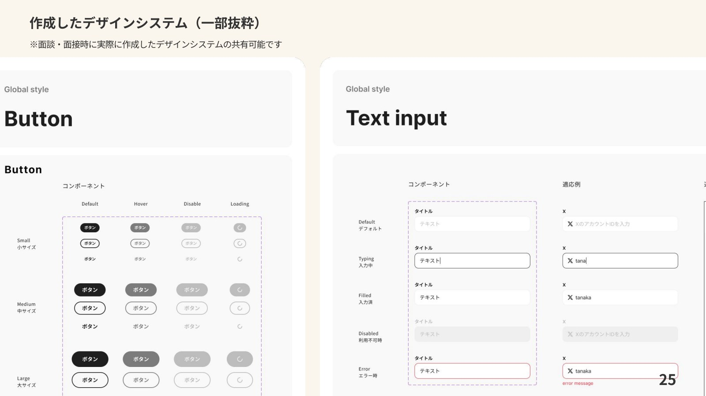
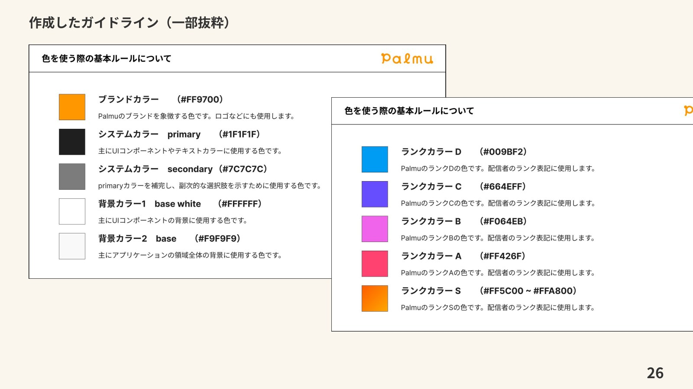
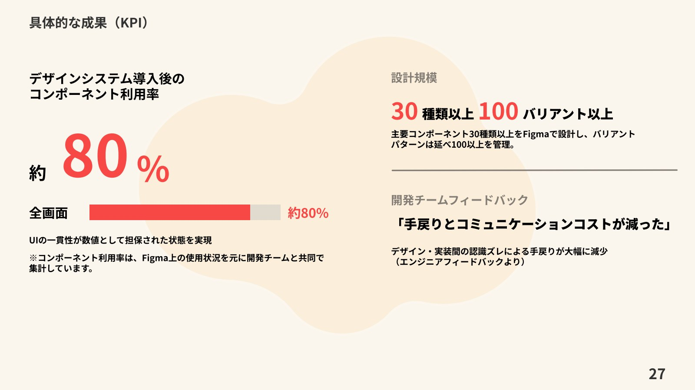

株式会社Lightでの制作実績
デザインシステムの構築・ガイドラインの作成
UIの一貫性と制作効率の向上を目指し、デザインシステムを構築。主要コンポーネント30種類以上、100以上のバリアントを整備しました。
担当：デザインシステム設計・コンポーネント整備・ガイドライン作成
課題と取り組み
リリースを優先してきたため、画面ごとのUIの一貫性や、再利用できるコンポーネントが十分に整備されていませんでした。カラーとコンポーネントの基準を定め、チームで使う共通言語を整備しました。
成果
主要コンポーネント30種類以上と、延べ100以上のバリアントをFigmaで管理。PDFでは、導入後のコンポーネント利用率は約80%と報告しています。利用率はFigmaの使用状況をもとに開発チームと共同で集計したものです。




